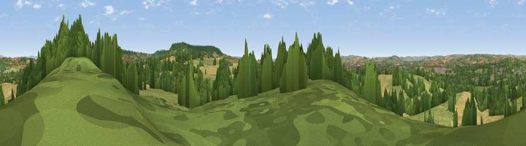

Viewpoint near Uffculme
#20892 in England · top 40% of its area beats it · near UffculmeThe view, rendered

A 360° render of this exact spot computed from the terrain model, tree cover and land cover — summer colours, afternoon light, calibrated against photographs of famous viewpoints. Real trees, hedges and buildings will differ in detail.
The panorama
Grey silhouette: terrain skyline in each direction (720 bearings, Earth curvature and refraction included). Dashed green: skyline with trees (+15 m) and buildings (+8 m) as obstacles. Blue strip: how far the ground is visible on each bearing.
Where the view opens
Wedge length = distance to the farthest visible ground on that bearing (vegetation-aware). Rings at 10, 25 and 50 km.
What fills the view
49% grassland · 25% cropland · 23% woodland · 2% built-up
Angular shares of the visible panorama (visual magnitude), not map area. Landscape diversity 0.49 (0–1 Shannon).
Key numbers
More beautiful places nearby
The staircase of upgrades: each row has a higher view potential than everything closer. Driving times are estimates from straight-line distance, calibrated against real road routing — check an actual route before setting out.
| Place | Direction | Drive | Score |
|---|---|---|---|
| Viewpoint near Uffculme | NNW · 2 km | ~6 min | 53.2 |
| Viewpoint near Uffculme | N · 3 km | ~7 min | 55.5 |
| Viewpoint near Blackborough | SE · 3 km | ~7 min | 71.9 |
| Viewpoint near Saint Hill | SE · 5 km | ~10 min | 73.9 |
| Hembury | SSE · 9 km | ~18 min | 75.9 |
| Viewpoint near Bradninch | SW · 12 km | ~22 min | 77.7 |
| Raddon Hills | WSW · 19 km | ~32 min | 78.2 |
| Viewpoint near Stockleigh Pomeroy | WSW · 19 km | ~33 min | 78.9 |
50.89164, -3.32399 · source: screening · position refined by local search. Computed location — check access rights before visiting.